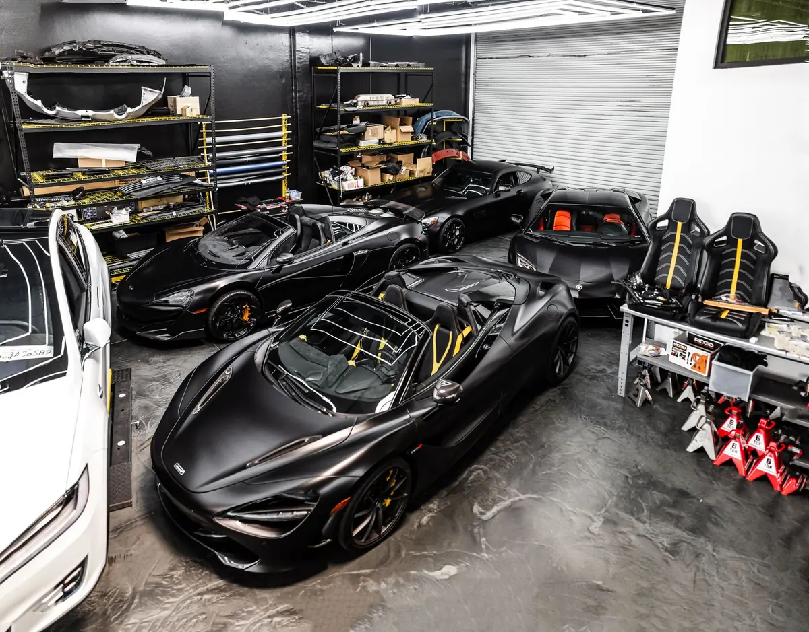

B.Sc Computer Science
Miva Open University
- Level
- 100
- Course
- COS 106, Introduction to Web Technologies
- Project
- This website is my COS 106 term project
A car dealer learning to code. Here is my background, where I am headed, the skills I am building, and what I enjoy outside work.

I am from Edo State, and I have lived in both Edo and Lagos.
I run an auto business that sells cars, and I am working on opening a large car dealership. I am also a 100 level B.Sc Computer Science student at Miva Open University.
Where I study, and what I am learning this year.
Miva Open University
COS 106 covers the three languages every website is made from. I built this site with all three.
Two goals: one in business, one in tech.
Scale my auto business, and open a large car dealership. That work is already under way.
Gain the tech skills to build and shape software that helps my own business, and other businesses, run better.
I am at the start of my tech journey, so this table is honest about where each skill stands.
| Skill | Where it comes from | Where I am |
|---|---|---|
| HTML | COS 106 at Miva | Learning |
| CSS | COS 106 at Miva | Learning |
| JavaScript | COS 106 at Miva | Learning |
| Car sales | My auto business | Hands-on |
| Running a business | My auto business | Hands-on |
What I enjoy when I am not working or studying.

I am a car enthusiast. Cars are my trade, and they are my hobby too.
Away from cars, gaming is my other passion.